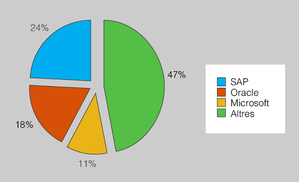

Business information systems¶
Basic goals¶
Although computer programs were initially used to speed up the company's tasks, they are currently playing a key role in many companies. Being very general, we can say that computer systems have been implemented with two basic goals:
- Facilitate tasks to workers.
- Facilitate the decision-making of the leaders.
It is from this prism that the evaluations of the success or failure of the implantation of a computer system in a company are often evaluated.
Decision-making¶
One of the common goals in almost all organizations is to obtain and maintain a competitive advantage, which at the same time provides a long -term advantage. This raises a series of issues, such as:
- Do you have to invest?
- Production should be increase?
- More staff should be hired?
- ...
Although all companies are different, they have in common that this competitive advantage is often based on making decisions at the right time, and usually in a short space of time, since knowing the needs of the market late can make someone else take advantage of them and if he manages to position himself it is very difficult to compete later.
The fact that the decisions that are made can directly affect the future of the company and that must be taken at the right time make computer systems a valuable resource for any organization. Decisions should no longer be made by intuitions or randomly, but based on the data that can be obtained from computer systems.
We can divide the data into two large groups:
- Internal data: generated by the company itself, such as sales number, suppliers prices and company production capacity.
- Environment data: market situation, competitors, legislation...
The biggest problem is that the information society is causing everyone to receive a large amount of data every day and despite the fact that much of this data is irrelevant to the objectives of the company, there is much that is or may be important in the company decision-making process and therefore must be detected.
This means that companies are forced to deal with a large amount of information, and the management of this information is a costly practice both in the use of resources and people.
Therefore, computer systems are essential to provide the mechanisms to discern the data they use, to organize and classify the data in order to obtain the necessary information at the right time.
Make tasks easier¶
The fact that computerization has facilitated the tasks that workers had to carry out is very clear in what has happened in the process of company transactions. The transaction process includes a series of routine tasks such as stock control, preparation of delivery notes, invoices or accounting to be carried out in a company and that previously required many resources for its development, as shown. The figure:

Before the appearance of computer science, these processes, although they are not usually complex, consumed a large amount of resources: a lot of staff had to be allocated, it was necessary to store the data...
Computerization significantly streamlined these processes, releasing many of the resources that were dedicated to the transactions process for other tasks. The success was so great that the computerized transactions process is currently implemented in any company.
Computer systems have contributed and contributing to the tasks faster and less prone to errors and therefore allow companies to reduce costs and offer more good service.
Business software¶
There is a large and very varied amount of applications that can be used in companies. The programs used in companies range from office programs to fully specialized programs for a company in a particular sector.
Important
Business software understood any type of software that helps to measure or improve their activity.
It is very difficult to classify business software, but one is possible to rely on the basis for creating it. From this point of view we can divide the software used to manage a company in:
- Generic applications.
- Custom software.
- Standard software.
- ERP (Integrated Management Software or enterprise Resource Planning).
In general, large companies usually have greater control over all aspects of the business, while the smallest tend to have software with similar functions but at a lower cost and features.
Generic applications¶
Companies also use a series of applications that are not specifically developed for company management, but are more general, such as office applications, web browsers or email programs.
These applications, although not specifically developed for company management, sometimes play a very important role;Web browsers, for example, are vital for access to some web services;or with regard to data export, they are often imported in some office package for statistics or analysis of results that are not defined in the main management program.
Even cases of very small companies are used that can use generic programs such as office applications to simplify control of their business activity.
Custom software¶
In the principles of computer adoption by companies the most common was for these companies to define their computer systems by making a program that would perfectly adapt to their operation or their needs.
Tailoring software is to develop a new computer program that allows you to computerize the activity of the company.
The idea is to hire computer scientists to develop a program that allows computer management to computerize. Since these are specific programs for the organization, these programs are perfectly adapted to their needs.
But these programs also have a number of problems:
- The operation of the company must be analysed in detail to perfectly understand what to do.
- Implementation is a long and prone process, as the program has not been tested before.
- They adapt so well to the company that any change in operation normally causes that changes to software should also be made. This makes this type of software very expensive to keep.
Software standard¶
Note
Standard Business Management Software is developed software specifically to be able to work in most organizations.
Standard software is specifically designed to do specific tasks in a global generic company or a particular sector. The idea behind these applications is to try to reduce the costs and minimize the errors that occur in the development of tailor -made applications by offering a package that does the functions as generically as possible so that it can be used in different companies.
Important
Despite the resemblance between business tasks, small specificities are what make them different and really define them.
Although companies are all different, the reality is that there is a very important part of tasks that are common to all. And thanks to this you can create generic packages that can be reused in different companies.
This system allows:
- Greatly reduce the cost because the software is already developed and tested.
- Reduce software implementation time. It is generally enough to enter the data and you can start working.
There are many programs of this type that are usually concentrated on the needs of small and medium-sized businesses, offering in a single package control of stocks, point of sale, accounting and turnover.
The disadvantages of these programs are in the adaptation:
- All functions are designed to function "anywhere" and therefore do not usually adapt perfectly to the specificities of any company.
- They can cause the company to adapt to the operation of the program and not the other way around.
In addition, sometimes the programs that would best adapt to the different departments of a company are not the same developer. For example, it can be the case that the accounting program that goes the most is that of the company A, while the one of warehouse management is that of the company B.
Having software from different companies generally causes a number of problems but usually the most important thing is "How do we make the programs communicate the data with each other without problems?"
Even when this communication is achieved there is usually a series of data from a program that will never be passed to the other (because it does not use them or because they do not need). And this generates what we call _illes computer.
There is a computer island when there are different departments in a company that have their own data and only share a part with the rest of the company.
It should also be borne in mind that programs are not perfect, and problems are usually detected, evolve, and new versions come out. It may happen that an update of any of the programs causes problems to exchange data with the other programs, which, from a certain function, do tasks differently ...
Despite these disadvantages, standard software is a very valid option that is being used in the management of a large number of small and medium-sized businesses.
ERP¶
At the time it was necessary to unite the different applications of the different departments of a company, it was seen that having a single storage system would improve the efficiency of the organization.
Integrated management software or enterprise Resource Planning (ERP) arose from the industrial systems of manufacturing resources or Material Planning (MRP and MPR II) requirement in order to integrate all the information systems of the information systems Companies in one.

What ERPs do is expand the concept of MRP II to all business areas, from finance and project control to human resources.
Enterprise Resource Planning
ERPs are comprehensive systems for company management. This is a Integrated program that allows you to evaluate and manage the business.
Are information management systems that automate many of the tasks of operation and production of a company's business.
They are For different components or modules that offer solutions to certain business processes and can be freely integrated to form the final application. Modular operation allows any company to be able to adapt the program to the changes and needs of each moment, integrating or eliminating modules according to the new needs.
In addition, functioning in a modular way allows the ERP to be adapted to a different set of companies and sectors since each company only needs to integrate the modules that it really needs.
Many of the ERPs, through some kind of development tools, allow to adapt specific modules to the needs particular of the company.
The big difference between the ERPs and traditional applications is the fact that ERPs try to cover all the processes of the company and not just a part, as did traditional applications. This means that all areas and procedures of the company can be integrated into a single application ** and allows you to obtain a global vision in a simpler way.
The integration of all aspects of the business into the same application causes that the communications between the processes ** are simplified. If we start from a traditional system, the different departments must establish multiple communications with the other departments in order to do their job.
However, with an ERP, the modules do not need to communicate with the other modules; They just have to do it with the common data source.
ERPs are aware of the use of general purpose applications in companies and are usually intended to interact with office or browsers.
They have not been alien to the successful explosion that has been the Internet:
- Almost everyone allows you to work from web browsers (thus eliminating the need for specific customers).
- They are perfectly integrated with email programs and begin to offer integration with social networks or email.
Communications between processes with an ERP

ERP Characteristics¶
Simplifying a lot we can say that an ERP consists of two basic components:
- A centralized database.
- A group of modules or applications.
Basic scheme of an ERP

A centralized database¶
The ERPs work with a centralized database in which all programs interact so that the data is only stored once and there is never disintegrated data.
This central data repository guarantees that since the information is at one point, at any time an image of the state in which the company is located can be obtained. This eliminates the possibility of creating "computer islands".
It also minimizes the exchange of information between departments and the possibility that someone will work with outdated data as the information is the same for everyone.
Modules¶
Modules are a set of applications that can be integrated to form the software system. It is quite common for each of these modules to coincide with the functional units of the company (purchases, sales, inventory, finance...).
Therefore, one of the great advantages of ERPs with respect to other systems is that with a single program all the management of the company is integrated. This brings associated advantages:
- Learning time is reduced because you do not need to learn how different environments work, because it is the same in all programs.
- The system can be adapted to the needs of each moment of the company, adding new modules to do new tasks or changing the way the installed modules work.
All modules share the information they generate with the other modules so that at any point reliable and truthful information can be obtained.
Disadvantages¶
Not everything is advantages in ERPs; They also have some disadvantages, such as:
- The implantation is usually complex as the entire company must be involved. There are numerous examples of ERP implantations that failed because the entire company has not been involved in implantation or resistance to the change in some departments.
- It is quite common for the implantation of the ERP to mean that it has to be changed the way of operating some process of the company to adapt it to the way of doing so of the ERP, or that some module must be rescheduled to adapt the company to the operation. All this causes the phases of development and proof of the changes that have been made more important, and therefore the time of implementation is still long.
Usually the implantation time of an ERP in a company exceeds the year.
But there are other factors that can make the implementation time longer, such as:
- Problems in the integration of data existing in the new system.
- Resistance of some departments to change.
- Problems of learning the new tools by workers.
Another problem that must be taken into account is that it becomes dependent on a single software provider, and this makes the company dependent on the provider and its licenses and maintenance costs, which many sometimes they are important. Therefore, ERPs offer many advantages but are not recommended for companies that are often changed or decentralized.
Types of ERP¶
While initially ERPs were designed to operate in any company, regardless of the sector they worked, they are currently concentrating more on adapting to cover the needs of small and medium-sized businesses. In this way, ERPs have been appeared specifically for certain business sectors.
A classification of the ERPs could be made from a point of view of the companies to which they are targeted in:
- Horizontal ERP: Applications designed to work in any company.
- Vertical ERP: Applications designed to work on a specific activity.
Vertical ERP¶
A vertical ERP is a solution with all standard features such as warehouse control, purchases, sales or finances, but the specific needs of a particular sector are added and adapted.
One of the reasons why horizontal ERPs have such a great implementation is because they solve everything that is generalist but do not usually solve those parts that are more specific to a particular industrial sector. It is at this point that vertical ERPs take force because they are adapted by developers with knowledge of the environment and business, the implantation time is significantly reduced.
In the case of horizontal ERPs, it is common for the cost of adapting the program, even higher than the cost of licenses, as many hours of adaptation are needed to achieve integration with the company. However, in the case of verticals, the adaptation requires few changes and therefore the final result also has a lower cost.
However, vertical ERPs have more tendency than the horizontal ones to make the company the one that has to be adapted to the ERP and not the other way around; This is usually due to the fact that it does things differently than they are done in the company, and to make a change in the development field would eliminate the advantage of having a vertical ERP.
Main ERP programs¶
There is no perfect ERP and all have strengths and weaknesses, and therefore one of the fundamental aspects for the implantation of an ERP to succeed in a company is to choose it properly.
There are several ERP products available in the market, including those offered by the three large ERP developer companies: SAP AG, Oracle and Microsoft. But there are many more solutions, such as those that make up the SAGE companies (very popular with contaplus or bills), epicor, IFS or Ross (Figure.6).
Distribution of ERPs in the market in 2011 according to Panorama Consulting Group 
The most popular ERPs are:
- Knows r/3.
- Oracle e-Bussines suite.
- Oracle JD Edwards.
- Oracle Peoplesoft.
- Microsoft Dynamics.
- Epicor ERP.
- Sage.
- Infor ERP.
- Lawson M3 ERP.
Open source ERP¶
Also in the world of free software you can find ERP software, whose manufacturers often achieve income through the supply of customer services.
Among the open source ERP programs are:
- Openbravo.
- OpenERP.
- Compiere.
- Adempière.
- Opentaps.
The open source offers extra features that must always be taken into account when assessing whether or not these solutions need to be implemented: * The clearest advantage is the price. Open source ERPs can be achieved at no cost and thus reduce implementation costs and user licenses. * It does not create any dependence on a computer supplier as the software is controlled by the company and can be used to create its own ERP with much less resources than necessary in a payment system. * Because it has the code the possibilities of adaptation of the program to the needs of the company are maximum. Payment solutions generally allow to customize the modules but always within limits. In the case of open source systems, these limits do not exist.
But free software is not exempt from trouble, which causes many companies to dare to use them:
- There is not always enough documentation of the operation of the programs. This can increase your learning time.
- Software updates are usually unpredictable and the changes that are made are not always documented.
- Projects sometimes disappear. The disappearance of a project usually ends up forcing product to be changed.
- Although almost all of them offer the free product but with a payment version that includes support, in some cases the support is not usually as important as the one offered in the case of owner software.
Open source ERPs are a totally valid alternative and must be evaluated when choosing which ERP is most adapted to the needs of the company, but always taking into account the strengths and the strengths weaknesses it has.
Cloud computing¶
Most of these ERPs are adapting or already adapted to be able to function in what is known as cloud computing or more specifically as SAAAS (software as a service).
The idea is to not have to make any software installation on the company's servers but to access the program online, usually with a web browser. This allows the installation and maintenance tasks to be externalized, as it is the supplier that will be in charge.
This feature allows:
- Use the program without having to install any software as this software is installed on the seller's servers.
- That is not necessary for the company make any expenditure on hardware infrastructure (you do not need to buy a server, implement backup mechanisms ...) or in qualified computer staff. A computer and an internet connection are enough to work with the ERP.
Generally the cost of this type of service is paid via subscription, which implies a much lower price than what is requested to buy the software package and the rent of the technicians responsible for the installation.
It works in this way that the software is always updated as the developer company is in charge of it on its own servers. You do not need to take risks or have extra expenses doing updates on its servers.
But it must always be taken into account that working in this way involves risks:
- It requires that there is a permanent connection on the Internet and therefore the company of the telephone company makes more dependent.
- A failure on the servers of the hostel company can completely stop the operation of the company as the program that manages everything cannot be accessed.
- Because the data is stored in a remote place, in case of problems it is not possible to recover them.
In addition, the use of cloud services can lead to legal problems as the data ceases to be stored in the company to become on the supplier's servers, and sometimes these suppliers are not in The same country in which the company works.
Therefore, the Personal Data Protection Law (LOPD) can be violated due to the limitations imposed on the storage location, since among the data with which the company works on it is usually personal.
Data protection matters
The LOPD defines among other things in which cases you can afford a third party accessing an organization's data or what conditions must be fulfilled to move data from one country to another.
This requires, before contracting a cloud service, to ensure that the service provider company guarantees that the data that will be stored on its servers will be saved without violating the law.
Implantation of an ERP¶
ERPs are complex programs of implantation and it is not uncommon for implantation to a company to become a failure. From a business point of view a failure can happen so that it takes much longer or money than expected to implement a certain solution, so that this solution does not work as it should, that is not used because it is too much complicated or because there is no confidence in the data obtained.
In the market there are hundreds of ERP with different characteristics and prices. It is essential that before choosing an ERP you are clear how the company is and what your specific needs are. The proper choice of ERP is one of the determining factors for implementation to be successful. ERPs are very specific programs, and an ERP is successful in one company is not a guarantee that it is successful in another, even if both are similar.
ERPs are not a type of software that is purchased and installed and begins to function but requires that it be adapted to use it in the company. You always need a time of parameterization and modification of the ERPs before you can use them. It is not usually enough to install the software, but a phase is needed to make all the necessary adaptations to be able to start the system.
It is rare that nothing must be modified in an ERP. There is usually some aspect of the functioning that goes well if it is changed, or it must be changed by force. For example, results lists are usually very generic because they are confident that they will be modified in the implantation phase.
With the implantation of an ERP, what is generally sought is to optimize the processes of the company and in this sense it is easy to also change any of the current processes of the company or have to disappear. For this reason, one of the key factors in the success of the implementation is to involve all areas of the business. The resistance of users accustomed to working in a way to change it is another determining factor because there is no success in implantation.
The adaptation time varies according to different aspects but generally influences which ERP has been chosen, what are the modules that must be implemented and the size of the company where the ERP is implanted. Extending the implantation time is often another factors by which the ERP's implantations fail.
Another factor that often causes many problems in the implantation of an ERP is the transfer of data. Companies already have many programs and very diverse to carry out management and generally require that they can be connected to the ERP and this is sometimes a very complex task.
One factor that must be taken into account is that the ERP does not need to be implemented suddenly as the modular nature that has that module can be implemented in module, and generally following this strategy is usually more guarantees of ' success.
To make the adaptation it is usually resorted to an integrative company that helps in the implementation of the ERP and helps the company in the aspects of the business related to change: hardware, software or change process. The choice of a good integrative company is also a determining factor in the success or failure of the implantation. Its experience and ability to understand the company and to properly adapt the tool is another determining factor.
Credits and bibliography¶
- SALA, Xavier i MARTÍ, Carles Llenguatges de marques i sistemes de gestió d’informació. Departament d’Ensenyament, 2012